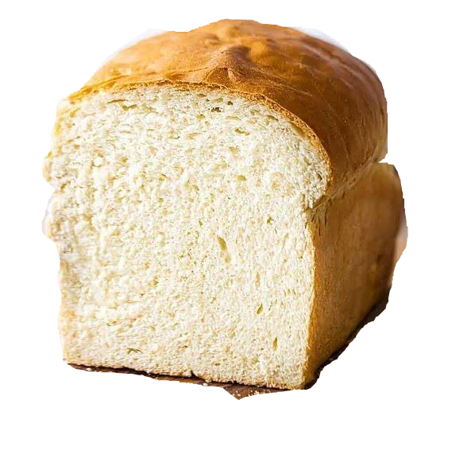
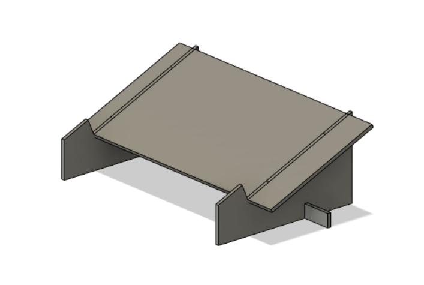
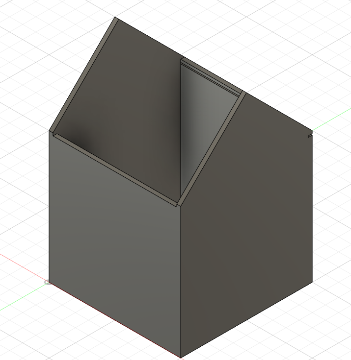
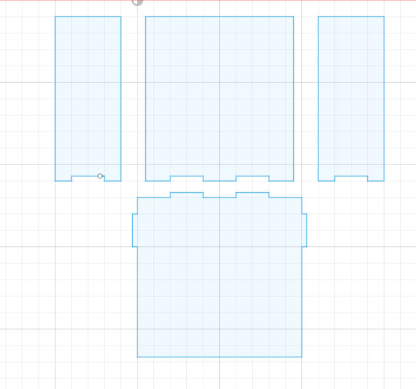
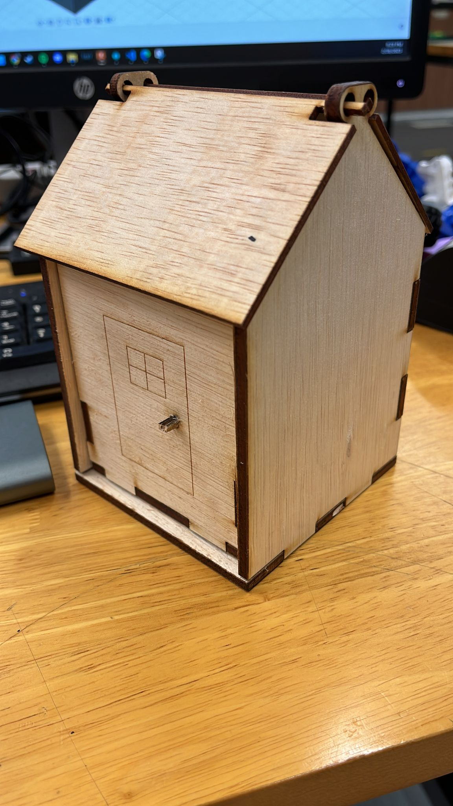

for 2d graphics we used 2 different software raster graphics and vector graphics
the first being raster graphics which allows you to edit raster files which are pixel based arranged in a matrix to be form images files include in the form of Jpeg , Png, GIF. for the exercise we used GIMP (GNU Image Manipulation Program) to edit the image by using the free select tool then adding a mask layer and turning it invisible to get a image of just the object we want.
this bread is done using gimp
next was vector graphics which uses mathmatical equations to draw out graphics the resultant image is often scaleable without losing quality or looking pixelated unlike raster based graphics files include SVG,Pdf,EPS,Dvg.
we 3d modelled a laptopstand with assembly as a exercise
and laser cutted a accessory box for the assignment with finger joints and a hinge
  